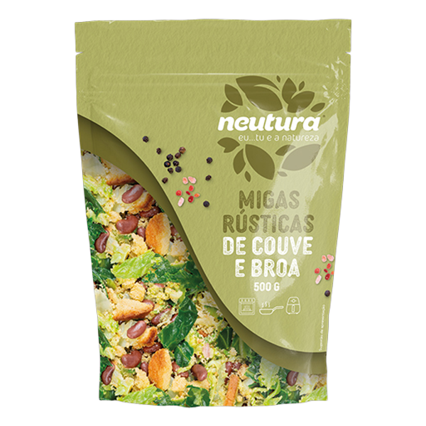

Migas Rústicas Tradicionais
Ingredientes
- 1 embalagem de Migas Rústicas de Couve e Broa Neutura (500 g)
- 3 dentes de alho esmagados
- 0,5 dl de azeite virgem extra
- Sal e pimenta preta q.b.
Modo de Preparação
- Aqueça o azeite numa frigideira larga ou caçarola de fundo grosso em lume médio. Adicione os dentes de alho esmagados e deixe alourar ligeiramente para aromatizar o azeite.
- Junte a embalagem de Migas Rústicas Neutura diretamente à frigideira. O produto já vem preparado para a máxima conveniência.
- Envolva bem no azeite aromatizado e cozinhe cerca de 10 a 12 minutos, mexendo ocasionalmente, até a broa ganhar uma textura ligeiramente tostada e crocante.
- Retifique os temperos com sal e pimenta preta moída na hora. Sirva de imediato como acompanhamento de carnes grelhadas ou assadas.
Ingrediente Chave